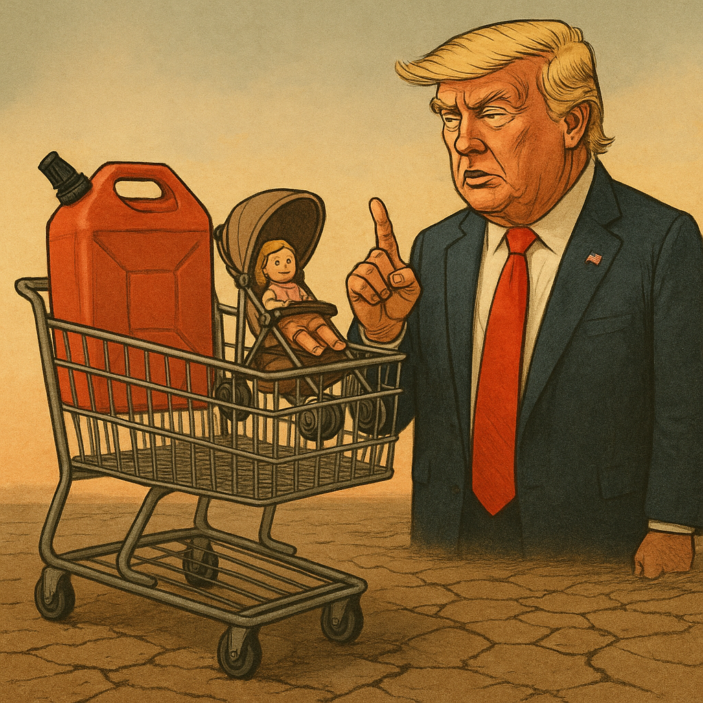

Publicado em 2025-05-05 19:03:28
Num momento em que a economia americana mostra sinais de tensão — com inflação a subir discretamente, desemprego a resistir e o consumo a abrandar — Donald Trump surge mais uma vez com a sua visão singular do mundo: menos brinquedos, mais gasolina e, acima de tudo, fé cega no seu génio económico.
Esta semana, Trump declarou que os americanos deviam “aceitar um certo grau de austeridade”, defendendo que uma criança não precisa de 35 bonecas — “duas ou três chegam” — e que o importante é ter gasolina.
Gasolina acima de tudo. Bonecas só em racionamento.
A mensagem, embalada numa lógica de avô autoritário e coach motivacional de fundo de quintal, resume-se assim: não se queixem, sacrifiquem-se e comprem combustível — porque papá Trump sabe o que faz.
Ao afirmar “não precisamos de alimentar a fera”, Trump pode estar a referir-se ao consumo desenfreado — ou, talvez mais provavelmente, ao monstro da globalização e diversidade económica que ele sempre combateu com tarifas, muros e discursos inflamados.
Mas o problema não está só nas palavras. Está na contradição: impõe tarifas, sabe que os preços sobem, e depois exige ao povo que se sacrifique... mas promete a melhor economia da história. Uma ginástica retórica que faria corar qualquer ilusionista de Las Vegas.
Como sempre, Trump aplica a fórmula infalível:
Mesmo quando os indicadores mostram estabilidade relativa — inflação a 2,3% e desemprego em 4,2% —, Trump prefere o drama à nuance. Apresenta-se como salvador de um país em chamas, mesmo que os dados não sustentem esse apocalipse.
A sua “economia” não se constrói em cima de políticas sólidas, mas de frases feitas, comparações absurdas e um marketing de realidade alternativa.
Talvez a imagem mais simbólica desta doutrina seja mesmo a do carrinho de bebé vazio, empurrado por uma família que já não compra brinquedos, mas enche o depósito de um SUV para ir trabalhar 70 horas por semana com o salário congelado.
Trump quer transformar os EUA numa nação espartana, que troca o consumo pelo combustível, o conforto pela obediência e a crítica pela devoção.
A pergunta que fica é: quantas bonecas se podem sacrificar antes de uma democracia se transformar num reality show autoritário com bandeira?